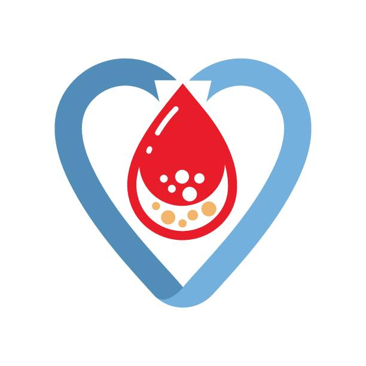

Recepti za Dijabetes
☰
Home
Statistics
Charts
Patient
Recipes

Ovsena kaša sa bademima i borovnicama
Jaja sa povrćem
Grčki jogurt sa chia semenkama i malinama
Šaka orašastih plodova
Sirova šargarepa ili celer sa humusom
Jedna jabuka sa kašikom kikiriki putera
Pečena piletina sa povrćem
Riblji file sa kvinojom
Sočivo ili pasulj čorba
Avokado sa kriškom integralnog hleba
Parče sira sa nekoliko oraha
Smoothie od špinata, krastavca, limuna i đumbira
Pečeni batat sa piletinom i salatom od rukole
Grilovani tofu sa povrćem na žaru
Pohovani patlidžan u rerni sa paradajz sosom i parmezanom
Čokoladni mousse od avokada
Sveže bobičasto voće sa cimetom
Chia puding sa kokosovim mlekom
Izaberite recept:
Ovsena kaša sa bademima i borovnicama
Jaja sa povrćem
Grčki jogurt sa chia semenkama i malinama
Šaka orašastih plodova
Sirova šargarepa ili celer sa humusom
Jedna jabuka sa kašikom kikiriki putera
Pečena piletina sa povrćem
Riblji file sa kvinojom
Sočivo ili pasulj čorba
Avokado sa kriškom integralnog hleba
Parče sira sa nekoliko oraha
Smoothie od špinata, krastavca, limuna i đumbira
Pečeni batat sa piletinom i salatom od rukole
Grilovani tofu sa povrćem na žaru
Pohovani patlidžan u rerni sa paradajz sosom i parmezanom
Čokoladni mousse od avokada
Sveže bobičasto voće sa cimetom
Chia puding sa kokosovim mlekom
Izaberite recept sa leve strane
Kliknite na jelo da biste videli recept.